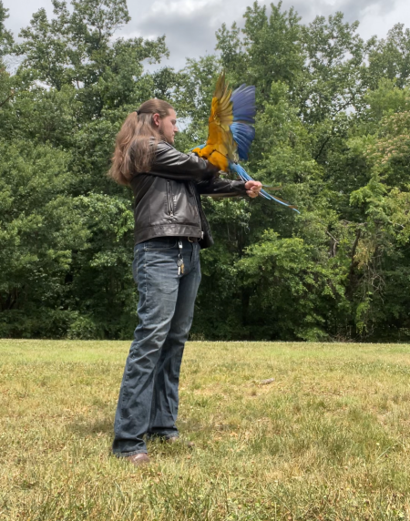

About Me:
Resume
Dean’s List college student at Towson University with a GPA of 3.5, working towards both a bachelor’s and master’s degree for Computer Science at the same time (Accelerated Program)
Skills include knowledge in several coding languages such as Java, HTML, CSS, and C++, and proficiency with IDEs, work environments, and databases including VScode, the MERN stack, and Eclipse.
Earned an Associates of Arts in General Education at the Community College of Baltimore County in 2021.
Work experience includes several years as an assistant manager in the retail industry and a work study job at T.U. called Cyber Connections.
Seeking an entry level software engineering, information technology, or computer science job in order to gain experience and grow for a long-term career.